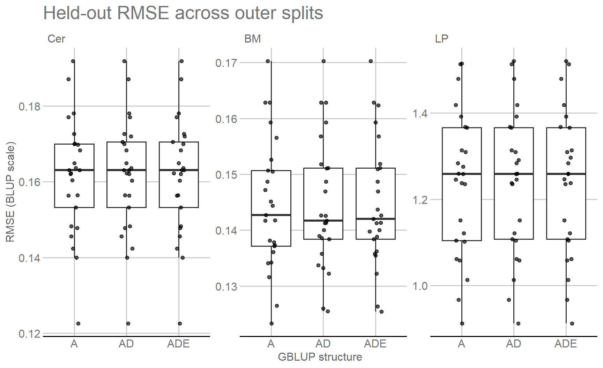

Real data: GBLUP A, AD, and ADE
Weverton Gomes da Costa
2026-11-25
Last updated: 2026-11-25
Checks: 7 0
Knit directory:
Genomic-Prediction-using-Regularized-Artificial-Neural-Networks/
This reproducible R Markdown analysis was created with workflowr (version 1.7.2). The Checks tab describes the reproducibility checks that were applied when the results were created. The Past versions tab lists the development history.
Great! Since the R Markdown file has been committed to the Git repository, you know the exact version of the code that produced these results.
Great job! The global environment was empty. Objects defined in the global environment can affect the analysis in your R Markdown file in unknown ways. For reproduciblity it’s best to always run the code in an empty environment.
The command set.seed(20260821) was run prior to running
the code in the R Markdown file. Setting a seed ensures that any results
that rely on randomness, e.g. subsampling or permutations, are
reproducible.
Great job! Recording the operating system, R version, and package versions is critical for reproducibility.
Nice! There were no cached chunks for this analysis, so you can be confident that you successfully produced the results during this run.
Great job! Using relative paths to the files within your workflowr project makes it easier to run your code on other machines.
Great! You are using Git for version control. Tracking code development and connecting the code version to the results is critical for reproducibility.
The results in this page were generated with repository version af68a44. See the Past versions tab to see a history of the changes made to the R Markdown and HTML files.
Note that you need to be careful to ensure that all relevant files for
the analysis have been committed to Git prior to generating the results
(you can use wflow_publish or
wflow_git_commit). workflowr only checks the R Markdown
file, but you know if there are other scripts or data files that it
depends on. Below is the status of the Git repository when the results
were generated:
Ignored files:
Ignored: .Rhistory
Ignored: .Rproj.user/
Ignored: .github/
Ignored: CONTRIBUTING.md
Ignored: data/dados_reais/geno_real.rds
Ignored: output/real/ann/figures/
Ignored: output/real/audit/figures/
Ignored: output/real/comparison/figures/
Ignored: output/real/gblup/figures/
Ignored: output/real/phenotype/figures/
Ignored: output/simulated/ann/figures/
Ignored: output/simulated/audit/figures/
Ignored: output/simulated/comparison/figures/
Ignored: output/simulated/gblup/figures/
Ignored: output/simulated/validation/figures/
Ignored: renv/library/
Ignored: renv/staging/
Note that any generated files, e.g. HTML, png, CSS, etc., are not included in this status report because it is ok for generated content to have uncommitted changes.
These are the previous versions of the repository in which changes were
made to the R Markdown (analysis/real_data_gblup.Rmd) and
HTML (docs/real_data_gblup.html) files. If you’ve
configured a remote Git repository (see ?wflow_git_remote),
click on the hyperlinks in the table below to view the files as they
were in that past version.
| File | Version | Author | Date | Message |
|---|---|---|---|---|
| Rmd | af68a44 | WevertonGomesCosta | 2026-11-25 | Refactor real-data GBLUP tutorial and update approved figures |
| html | af68a44 | WevertonGomesCosta | 2026-11-25 | Refactor real-data GBLUP tutorial and update approved figures |
| html | 915ac7e | WevertonGomesCosta | 2026-11-18 | docs(site): publish audited R04A GBLUP tutorial |
| Rmd | 4c0ca12 | WevertonGomesCosta | 2026-11-18 | docs(real): finalize R04A GBLUP tutorial |
| Rmd | 15bfb23 | GitHub | 2026-11-16 | docs: standardize scientific documentation and terminology (#19) |
| html | 15bfb23 | GitHub | 2026-11-16 | docs: standardize scientific documentation and terminology (#19) |
| Rmd | c836215 | GitHub | 2026-11-16 | docs(site): publish real-data tutorial and synchronized comparisons (#18) |
| html | c836215 | GitHub | 2026-11-16 | docs(site): publish real-data tutorial and synchronized comparisons (#18) |
| Rmd | 800de50 | WevertonGomesCosta | 2026-11-12 | Add real-data GBLUP A AD and ADE analysis |
| html | 800de50 | WevertonGomesCosta | 2026-11-12 | Add real-data GBLUP A AD and ADE analysis |
| Rmd | a6a1d2f | WevertonGomesCosta | 2026-11-12 | Remove obsolete real-data workflow and diagnostics |
| html | a6a1d2f | WevertonGomesCosta | 2026-11-12 | Remove obsolete real-data workflow and diagnostics |
| html | cdbac19 | WevertonGomesCosta | 2026-11-09 | Build real-data workflowr pages |
| Rmd | 4fa5d7c | WevertonGomesCosta | 2026-11-05 | Add audited real-data workflow through GBLUP-ADE |
GBLUP models for the real-data analysis
1. Objective
This module applies genomic best linear unbiased prediction (GBLUP) to the individual phenotypic BLUPs prepared in R01. Three previously specified models use different genomic covariance structures, while all models share the outer assessment partitions established in R03:
The three prespecified structures are fitted using the same 25 outer cross-validation splits. For each trait and split, the models use the same analysis individuals and are evaluated on the same 39 assessment individuals.
The response is the individual BLUP obtained from the preceding phenotypic mixed-model analysis. Within each genomic fitting task, the 39 assessment BLUPs are masked before estimating the genomic effects. They are subsequently used to evaluate held-out predictions. The upstream phenotypic BLUP estimation is not repeated inside each genomic fold.
The functional workflow is:
receive aligned genotypes, BLUPs, and validation partitions → construct genomic relationship matrices → define the three GBLUP structures → organize the fitting tasks → obtain out-of-fold predictions → examine numerical diagnostics and predictive metrics → summarize individual rankings → deliver the results for comparison with the ANN models.
2. Packages and dependencies
The packages below support different stages of the tutorial.
sommer fits GBLUP models and constructs genomic
relationship matrices; ggplot2 produces predictive figures;
ggthemes provides their graphical theme; and
kableExtra adds horizontal scrolling to the wide ranking
table. The knitr package, already used to render this
document, formats the tables. Input files and parameter values appear
only where they are needed.
library(sommer) # Fit genomic mixed models.
library(ggplot2) # Create prediction and diagnostic figures.
library(ggthemes) # Apply a consistent visual theme.
library(kableExtra) # Make wide tables horizontally scrollable.3. Genomic data and cross-validation
The analysis receives two saved R objects: a quality-controlled dataset from R02 and the fixed cross-validation partitions from R03. The first contains the genotype matrix and the precomputed phenotypic BLUPs; the second identifies which individuals belong to each analysis and assessment set. Individual identifiers link genotypes, BLUPs, and predictions throughout the module.
3.1 Input objects
The first readRDS() retrieves the processed genotype and
phenotype data. The second retrieves the five-repetition, five-fold
outer validation design. The genotype matrix is then converted to an R
matrix, while trait names and individual identifiers are taken from the
previously prepared object; the pipeline does not reconstruct these
inputs.
common <- readRDS("output/real/audit/preprocessed_real_common.rds")
cv <- readRDS("output/real/validation/real_cv_design.rds")
geno <- as.matrix(common$genotype)
blups <- common$phenotype
traits <- common$traits
ids <- rownames(geno)3.2 Outer cross-validation partitions
The assessment assignments are summarized into one row for each outer
split. Repetition identifies the repetition,
OuterFold its fold, and SplitID links that row
to the corresponding lists of training and assessment IDs. Sorting by
repetition and fold makes the subsequent task grid easier to read
without modifying the original partitions.
# Identify the 25 predefined assessment partitions from R03.
outer_meta <- unique(cv$outer_assignments[, c("Repetition", "OuterFold", "SplitID")])
outer_meta <- outer_meta[order(outer_meta$Repetition, outer_meta$OuterFold), , drop = FALSE]
rownames(outer_meta) <- NULL3.3 Input summary
The table summarizes the imported objects. Population size, marker count, traits, and split count are obtained directly from the data. Training and assessment sizes are read from the first saved outer split, which follows the same 156/39 allocation as the other partitions defined in R03. The GBLUP structures are introduced separately in Section 5.
input_summary <- data.frame(
Item = c(
"Individuals",
"Markers after QC",
"Traits",
"Outer splits",
"Outer analysis size",
"Outer assessment size"
),
Value = c(
nrow(geno),
ncol(geno),
length(traits),
nrow(outer_meta),
length(cv$outer_splits[[1L]]$analysis_ids),
length(cv$outer_splits[[1L]]$assessment_ids)
),
stringsAsFactors = FALSE
)
knitr::kable(
input_summary,
format = "html",
caption = "Common inputs used by the GBLUP models",
row.names = FALSE,
table.attr = 'class="table table-striped table-hover table-bordered" style="width:100%;"'
)| Item | Value |
|---|---|
| Individuals | 195 |
| Markers after QC | 20887 |
| Traits | 3 |
| Outer splits | 25 |
| Outer analysis size | 156 |
| Outer assessment size | 39 |
The validation object is consumed without modification. Consequently, A, AD, and ADE are compared on identical training and held-out individuals.
4. Genomic relationship matrices
The genotype matrix received from R02 contains 195 individuals and 20,887 markers retained after quality control. Genomic relationship matrices transform this individual-by-marker representation into individual-by-individual relationships.
Each resulting matrix has dimension . Its rows and columns identify the same individuals, and its entries describe genomic relationships according to the genetic component represented by the matrix.
4.1 Genetic components and relationship matrices
| Matrix | Genetic component | Construction |
|---|---|---|
| Additive | sommer::A.mat() |
|
| Dominance | sommer::D.mat() |
|
| Additive-by-additive epistasis | sommer::E.mat(type = "A#A") |
The additive matrix represents genomic relationships associated with additive genetic effects. The dominance matrix represents relationships associated with within-locus dominance effects. The epistatic matrix represents the additive-by-additive component of interactions between loci.
These matrices define the covariance structures of the corresponding random genetic effects. They do not directly provide individual genetic predictions or estimated variance components; those quantities are obtained when the mixed models are fitted.
4.2 Construction of the genomic relationship matrices
The following code constructs the three matrices using the same
quality-controlled marker panel. The argument min.MAF = 0
does not impose an additional positive minor allele frequency threshold.
The dominance and epistatic matrices retain the
nishio = TRUE specification, and type = "A#A"
identifies the additive-by-additive epistatic structure.
The matrices are constructed using the genomic information of all 195 individuals. Their construction does not use the phenotypic BLUPs.
The elapsed time is recorded immediately before and after the three matrix-construction calls. It therefore measures the combined construction time of A, D, and E.
The individual identifiers are assigned to the rows and columns of each matrix to maintain correspondence between genomic relationships and the individuals used in the mixed models.
The code also summarizes matrix dimensions, symmetry, finite entries, mean diagonal values, and the combined construction time.
Matrix construction is displayed without being repeated during routine rendering. The numerical summary is retrieved from the previously saved results.
# Construct additive, dominance, and additive-by-additive kernels.
kernel_start <- proc.time()[["elapsed"]]
A_matrix <- sommer::A.mat(geno, min.MAF = 0)
D_matrix <- sommer::D.mat(geno, nishio = TRUE, min.MAF = 0)
E_matrix <- sommer::E.mat(geno, nishio = TRUE, type = "A#A", min.MAF = 0)
kernel_seconds <- proc.time()[["elapsed"]] - kernel_start
# Label rows and columns using the common individual identifiers.
rownames(A_matrix) <- ids
colnames(A_matrix) <- ids
rownames(D_matrix) <- ids
colnames(D_matrix) <- ids
rownames(E_matrix) <- ids
colnames(E_matrix) <- ids
kernel_summary <- data.frame(
Kernel = c("Additive", "Dominance", "Epistatic_AxA"),
Rows = c(nrow(A_matrix), nrow(D_matrix), nrow(E_matrix)),
Columns = c(ncol(A_matrix), ncol(D_matrix), ncol(E_matrix)),
Symmetric = c(
isTRUE(all.equal(A_matrix, t(A_matrix), tolerance = 1e-8)),
isTRUE(all.equal(D_matrix, t(D_matrix), tolerance = 1e-8)),
isTRUE(all.equal(E_matrix, t(E_matrix), tolerance = 1e-8))
),
Finite = c(all(is.finite(A_matrix)), all(is.finite(D_matrix)),
all(is.finite(E_matrix))),
Mean_diagonal = c(mean(diag(A_matrix)), mean(diag(D_matrix)),
mean(diag(E_matrix))),
Kernel_build_seconds = rep(kernel_seconds, 3L),
stringsAsFactors = FALSE
)4.3 Numerical properties of the relationship matrices
The following table presents the previously saved numerical summaries of the additive, dominance, and additive-by-additive relationship matrices.
The dimensions describe the number of individuals represented in each matrix. The symmetry and finite-entry columns provide basic numerical diagnostics, but these checks alone do not establish positive semidefiniteness.
knitr::kable(
kernel_summary,
format = "html",
caption = "Genomic relationship matrices used by the three GBLUP structures",
digits = 6,
row.names = FALSE,
table.attr = 'class="table table-striped table-hover table-bordered" style="width:100%;"'
)| Kernel | Rows | Columns | Symmetric | Finite | Mean_diagonal | Kernel_build_seconds |
|---|---|---|---|---|---|---|
| Additive | 195 | 195 | TRUE | TRUE | 0.339623 | 1.54 |
| Dominance | 195 | 195 | TRUE | TRUE | 0.631842 | 1.54 |
| Epistatic_AxA | 195 | 195 | TRUE | TRUE | 0.140144 | 1.54 |
All three matrices contain 195 rows and 195 columns, are symmetric within the numerical tolerance used in the code, and contain finite entries.
The mean diagonal describes the scale of each relationship matrix. Differences among these values should not be interpreted as differences in the contribution of additive, dominance, or epistatic effects to phenotypic variation. The corresponding variance parameters are estimated during model fitting.
The Kernel_build_seconds column contains the same
combined construction time in all three rows. The recorded value of 1.54
seconds corresponds to the construction of the three matrices together,
rather than to three separately measured execution times.
The following code documents how the numerical summary was saved.
dir.create("output/real/gblup", recursive = TRUE, showWarnings = FALSE)
write.csv(kernel_summary, "output/real/gblup/real_gblup_kernel_summary.csv",
row.names = FALSE)5. Fixed candidate structures
The fitted response is the precomputed individual phenotypic BLUP obtained in R01. The genomic mixed models use the relationship matrices constructed in Section 4 to specify the covariance of the genetic effects.
5.1 Random effects and covariance structures
For the three fixed GBLUP structures, the random effects are described by
Here, is the intercept, is the vector of additive genetic effects, is the vector of dominance genetic effects, is the vector of additive-by-additive epistatic effects, and is the residual vector.
The matrices , , and describe the covariance structure of the corresponding genetic effects, while , , and are the associated variance parameters. The residual covariance is specified by .
Under the independent random-component specification used in these models, the marginal covariance matrices of the response are
5.2 Predictions under each genomic structure
The three models differ in the genetic components included in the prediction. The predicted response for individual is
The intercept and genetic effects are estimated separately for each model-fitting task. Their sum provides predictions on the scale of the individual phenotypic BLUPs. The residual is not included in the predicted value.
The A model provides the additive reference structure. The AD model additionally represents dominance relationships, whereas the ADE model also accommodates additive-by-additive epistatic relationships.
5.3 Candidate models used in cross-validation
Each row in the next table identifies a model and the genomic effects included in its covariance specification. The labels are used unchanged in the task grid, saved predictions, and later results.
model_structures <- data.frame(
Structure = c(
"A",
"AD",
"ADE"
),
Model = c(
"GBLUP_A",
"GBLUP_AD",
"GBLUP_ADE"
),
Genomic_components = c(
"Additive",
"Additive + dominance",
"Additive + dominance + additive-by-additive epistasis"
),
stringsAsFactors = FALSE
)
knitr::kable(
model_structures,
format = "html",
caption = "Fixed GBLUP candidate structures",
row.names = FALSE,
table.attr = 'class="table table-striped table-hover table-bordered" style="width:100%;"'
)| Structure | Model | Genomic_components |
|---|---|---|
| A | GBLUP_A | Additive |
| AD | GBLUP_AD | Additive + dominance |
| ADE | GBLUP_ADE | Additive + dominance + additive-by-additive epistasis |
The three structures remain fixed throughout the analysis. Increasing the number of genetic components provides a more flexible covariance specification, but does not necessarily improve prediction in held-out individuals.
Their predictive performance is evaluated using the same validation partitions, response variables, and predefined metrics.
The next section combines these three genomic structures with the characteristics and outer cross-validation splits to define the complete set of model-fitting tasks.
6. Evaluation grid
The evaluation grid combines three traits, five repetitions of five outer folds, and three fixed genomic structures. Each row represents one fitting task, with 25 tasks per trait-model combination and 75 per trait or model.
SplitID identifies the partition prepared in R03,
whereas TaskID identifies the combination of trait, split,
and genomic structure. The code below constructs these combinations and
summarizes their counts.
Each task predicts 39 assessment individuals, so the complete design contains held-out prediction records. These tasks are not statistically independent because their analysis sets overlap across folds and repetitions.
# Cross each characteristic with the 25 splits and three fixed structures.
task_table <- data.frame(
Dataset = character(0), Trait = character(0), Repetition = integer(0),
OuterFold = integer(0), SplitID = character(0), Structure = character(0),
Model = character(0), TaskID = character(0), stringsAsFactors = FALSE
)
for (trait in traits) {
for (split_row in seq_len(nrow(outer_meta))) {
for (model_row in seq_len(nrow(model_structures))) {
split_id <- outer_meta$SplitID[split_row]
structure <- model_structures$Structure[model_row]
task_table <- rbind(task_table, data.frame(
Dataset = "real", Trait = trait,
Repetition = outer_meta$Repetition[split_row],
OuterFold = outer_meta$OuterFold[split_row],
SplitID = split_id, Structure = structure,
Model = model_structures$Model[model_row],
TaskID = paste(trait, split_id, structure, sep = "_"),
stringsAsFactors = FALSE
))
}
}
}
rownames(task_table) <- NULL
task_summary <- as.data.frame(table(task_table$Trait, task_table$Structure),
stringsAsFactors = FALSE)
names(task_summary) <- c("Trait", "Structure", "Tasks")
knitr::kable(task_summary, format = "html",
caption = "Number of outer fitting tasks by trait and GBLUP structure",
row.names = FALSE,
table.attr = 'class="table table-striped table-hover table-bordered" style="width:100%;"')| Trait | Structure | Tasks |
|---|---|---|
| BM | A | 25 |
| Cer | A | 25 |
| LP | A | 25 |
| BM | AD | 25 |
| Cer | AD | 25 |
| LP | AD | 25 |
| BM | ADE | 25 |
| Cer | ADE | 25 |
| LP | ADE | 25 |
7. Fit A, AD, and ADE in every outer split
7.1 Analysis and assessment individuals
For each trait and outer split, the partitions received from R03 define 156 analysis individuals and 39 assessment individuals.
| Set | Individuals | Response during genomic fitting |
|---|---|---|
| Analysis | 156 | Available phenotypic BLUPs |
| Assessment | 39 | Masked phenotypic BLUPs |
| Total | 195 | Common genotyped population |
The response vector contains the phenotypic BLUPs estimated in R01.
The data supplied to the genomic model retain all 195 individual
identifiers, but dat$y[assessment_index] <- NA_real_
masks the 39 assessment responses before fitting. The 156 available
BLUPs supply response information for estimating the model parameters
and effects.
The genomic relationship matrices include all 195 genotyped individuals. Their relationships provide the basis for predicting genetic effects for individuals with masked responses. The original response vector is retained separately and its assessment values are recovered only for evaluation.
This is out-of-sample prediction with respect to genomic fitting. The upstream phenotypic BLUP estimation is not repeated inside each fold.
7.2 Model fitting and prediction
The three structures defined in Section 5 are fitted with
sommer::mmes(). The formula y ~ 1 specifies
the fixed intercept, and rcov = ~ units specifies the
residual structure. The random-effect terms combine vsm()
and ism() with the genomic covariance matrix supplied
through Gu.
| Genetic effect | Individual factor | Relationship matrix |
|---|---|---|
| Additive | id |
A_matrix |
| Dominance | idd |
D_matrix |
| Additive-by-additive | ide |
E_matrix |
The factors identify the same individuals but distinguish the random genetic components. The numerical settings are identical across tasks.
| Setting | Value | Interpretation |
|---|---|---|
SEED_GLOBAL |
20261105 | Random seed |
N_ITERS_SOMMER |
50 | Maximum number of fitting iterations |
TOL_LLIK |
0.0001 | Tolerance passed to tolParConvLL |
After fitting, the code extracts the variance parameters from
fit$theta according to the structure. Components absent
from a model are stored as zero; these structural zeros differ from zero
estimates of components that were fitted. The log-likelihood sequence in
fit$llik and the convergence indicator in
fit$convergence provide the numerical information discussed
in Section 8.
The random-effect solutions are recovered from
fit$uList. The incidence matrices constructed with
model.matrix() associate those solutions with the
individual identifiers. For the complete ADE structure,
The intercept is extracted from fit$b. Contributions
absent from a model are represented by zero vectors. The sum of the
genetic contributions is the genomic component; adding the intercept
produces predictions on the phenotypic BLUP scale. The residual is not
added to the prediction.
Only the 39 assessment predictions and corresponding observed BLUPs are used to evaluate each task. The following chunk documents the complete fitting procedure without rerunning it during routine rendering. The persisted results are subsequently loaded for the summaries and figures.
# Use the same numerical settings for every trait, split, and GBLUP structure.
SEED_GLOBAL <- 20261105L
N_ITERS_SOMMER <- 50L
TOL_LLIK <- 1e-4
set.seed(SEED_GLOBAL)
run_start <- proc.time()[["elapsed"]]
result_list <- vector("list", nrow(task_table))
prediction_list <- vector("list", nrow(task_table))
for (i in seq_len(nrow(task_table))) {
# Locate the outer analysis and assessment individuals.
task <- task_table[i, , drop = FALSE]
trait <- task$Trait
structure <- task$Structure
split <- cv$outer_splits[[task$SplitID]]
analysis_index <- match(split$analysis_ids, ids)
assessment_index <- match(split$assessment_ids, ids)
response_vector <- blups[[trait]]
# Mask assessment BLUPs before estimating the genomic effects.
id_factor <- factor(ids, levels = ids)
dat <- data.frame(y = response_vector, id = id_factor,
idd = id_factor, ide = id_factor)
dat$y[assessment_index] <- NA_real_
# Fit one of the three prespecified covariance structures.
fit_start <- proc.time()[["elapsed"]]
if (structure == "A") {
fit <- sommer::mmes(
y ~ 1,
random = ~ vsm(ism(id), Gu = A_matrix),
rcov = ~ units, nIters = N_ITERS_SOMMER,
tolParConvLL = TOL_LLIK, data = dat,
verbose = FALSE, dateWarning = FALSE
)
} else if (structure == "AD") {
fit <- sommer::mmes(
y ~ 1,
random = ~ vsm(ism(id), Gu = A_matrix) +
vsm(ism(idd), Gu = D_matrix),
rcov = ~ units, nIters = N_ITERS_SOMMER,
tolParConvLL = TOL_LLIK, data = dat,
verbose = FALSE, dateWarning = FALSE
)
} else {
fit <- sommer::mmes(
y ~ 1,
random = ~ vsm(ism(id), Gu = A_matrix) +
vsm(ism(idd), Gu = D_matrix) +
vsm(ism(ide), Gu = E_matrix),
rcov = ~ units, nIters = N_ITERS_SOMMER,
tolParConvLL = TOL_LLIK, data = dat,
verbose = FALSE, dateWarning = FALSE
)
}
fit_seconds <- proc.time()[["elapsed"]] - fit_start
# Extract the variance components and numerical diagnostics.
theta <- as.numeric(fit$theta)
llik <- as.numeric(fit$llik)
last_llik_change <- if (length(llik) > 1L) tail(diff(llik), 1L) else NA_real_
variance_A <- 0
variance_D <- 0
variance_E <- 0
variance_residual <- 0
if (structure == "A") {
variance_A <- theta[1L]
variance_residual <- theta[2L]
} else if (structure == "AD") {
variance_A <- theta[1L]
variance_D <- theta[2L]
variance_residual <- theta[3L]
} else {
variance_A <- theta[1L]
variance_D <- theta[2L]
variance_E <- theta[3L]
variance_residual <- theta[4L]
}
any_negative <- any(c(variance_A, variance_D, variance_E, variance_residual) < 0)
pass_llik_gate <- is.finite(last_llik_change) && abs(last_llik_change) <= TOL_LLIK
# Recover the individual effects and calculate predictions on the BLUP scale.
prediction_start <- proc.time()[["elapsed"]]
additive <- rep(0, length(ids))
dominance <- rep(0, length(ids))
epistatic <- rep(0, length(ids))
additive_effect <- as.matrix(fit$uList[["vsm(ism(id), Gu = A_matrix)"]])
additive_incidence <- model.matrix(~ id - 1, data = dat)
additive <- as.numeric(additive_incidence %*% additive_effect[, 1L, drop = FALSE])
if (structure %in% c("AD", "ADE")) {
dominance_effect <- as.matrix(fit$uList[["vsm(ism(idd), Gu = D_matrix)"]])
dominance_incidence <- model.matrix(~ idd - 1, data = dat)
dominance <- as.numeric(dominance_incidence %*% dominance_effect[, 1L, drop = FALSE])
}
if (structure == "ADE") {
epistatic_effect <- as.matrix(fit$uList[["vsm(ism(ide), Gu = E_matrix)"]])
epistatic_incidence <- model.matrix(~ ide - 1, data = dat)
epistatic <- as.numeric(epistatic_incidence %*% epistatic_effect[, 1L, drop = FALSE])
}
genomic_component <- additive + dominance + epistatic
intercept <- as.numeric(fit$b)[1L]
predicted_value <- intercept + genomic_component
predict_seconds <- proc.time()[["elapsed"]] - prediction_start
# Evaluate only the 39 individuals withheld from the current fit.
observed_test <- response_vector[assessment_index]
predicted_test <- predicted_value[assessment_index]
constant_prediction <- length(unique(predicted_test)) == 1L
if (length(unique(observed_test)) > 1L && !constant_prediction) {
correlation <- cor(predicted_test, observed_test, method = "pearson")
spearman <- cor(predicted_test, observed_test, method = "spearman")
} else {
correlation <- NA_real_
spearman <- NA_real_
}
rmse <- sqrt(mean((predicted_test - observed_test)^2))
mae <- mean(abs(predicted_test - observed_test))
bias <- mean(predicted_test - observed_test)
slope <- if (!constant_prediction) {
as.numeric(coef(lm(observed_test ~ predicted_test))[2L])
} else {
NA_real_
}
# Store one row of diagnostics and 39 individual predictions per fit.
result_list[[i]] <- data.frame(
Dataset = "real", Trait = trait,
Repetition = task$Repetition, Fold = task$OuterFold,
SplitID = task$SplitID, TaskID = task$TaskID,
Model = task$Model, Structure = structure,
N_train = length(analysis_index), N_test = length(assessment_index),
Convergence = isTRUE(fit$convergence), Iterations = length(llik),
Final_LLik = tail(llik, 1L), Last_LLik_change = last_llik_change,
Pass_LLik_gate = pass_llik_gate,
Variance_A = variance_A, Variance_D = variance_D,
Variance_E = variance_E, Variance_Residual = variance_residual,
Any_negative = any_negative, Constant_prediction = constant_prediction,
BLUP_Correlation = correlation, BLUP_Spearman = spearman,
BLUP_RMSE = rmse, BLUP_MAE = mae, BLUP_Bias = bias, BLUP_Slope = slope,
Kernel_build_seconds = kernel_seconds, Fit_seconds = fit_seconds,
Predict_seconds = predict_seconds, stringsAsFactors = FALSE
)
prediction_list[[i]] <- data.frame(
Dataset = "real", Trait = trait,
Repetition = task$Repetition, Fold = task$OuterFold,
SplitID = task$SplitID, TaskID = task$TaskID,
Model = task$Model, Structure = structure, ID = ids[assessment_index],
Observed_BLUP = observed_test, Predicted_BLUP = predicted_test,
Genomic_Component = genomic_component[assessment_index],
Additive_Prediction = additive[assessment_index],
Dominance_Prediction = dominance[assessment_index],
Epistatic_Prediction = epistatic[assessment_index],
stringsAsFactors = FALSE
)
}
results <- do.call(rbind, result_list)
predictions <- do.call(rbind, prediction_list)
rownames(results) <- NULL
rownames(predictions) <- NULL
run_seconds <- proc.time()[["elapsed"]] - run_start7.3 Model results
Each row of results represents one fitting task,
identified by trait, outer split, and genomic structure. The object
stores sample sizes, variance parameters, numerical diagnostics,
predictive metrics, and elapsed times. The first six rows illustrate
selected columns of the 225 fitting records.
knitr::kable(
head(results[, c("Trait", "SplitID", "Structure", "N_train", "N_test",
"BLUP_Correlation", "BLUP_RMSE")]),
format = "html", digits = 4, row.names = FALSE,
caption = "First six rows of the GBLUP model results",
table.attr = 'class="table table-striped table-hover table-bordered" style="width:100%;"'
)| Trait | SplitID | Structure | N_train | N_test | BLUP_Correlation | BLUP_RMSE |
|---|---|---|---|---|---|---|
| Cer | R01_F01 | A | 156 | 39 | 0.5045 | 0.1871 |
| Cer | R01_F01 | AD | 156 | 39 | 0.5045 | 0.1871 |
| Cer | R01_F01 | ADE | 156 | 39 | 0.5045 | 0.1871 |
| Cer | R01_F02 | A | 156 | 39 | 0.7019 | 0.1400 |
| Cer | R01_F02 | AD | 156 | 39 | 0.7019 | 0.1400 |
| Cer | R01_F02 | ADE | 156 | 39 | 0.7019 | 0.1400 |
7.4 Held-out predictions
Each row of predictions represents an assessment
individual in a particular task. Observed_BLUP is the
held-out response, and Predicted_BLUP includes the
intercept and the estimated genetic effects.
Genomic_Component excludes the intercept. The additive,
dominance, and epistatic contributions are also stored separately.
There are 39 records per task and 8,775 records in the complete design. They do not represent 8,775 different individuals because each individual appears across repetitions, traits, and structures. The first six rows illustrate the stored predictions.
knitr::kable(
head(predictions[, c("Trait", "SplitID", "Structure", "ID",
"Observed_BLUP", "Predicted_BLUP")]),
format = "html", digits = 4, row.names = FALSE,
caption = "First six held-out GBLUP predictions",
table.attr = 'class="table table-striped table-hover table-bordered" style="width:100%;"'
)| Trait | SplitID | Structure | ID | Observed_BLUP | Predicted_BLUP |
|---|---|---|---|---|---|
| Cer | R01_F01 | A | PROG01_PL02 | 2.4774 | 2.2822 |
| Cer | R01_F01 | A | PROG01_PL08 | 1.9774 | 2.4313 |
| Cer | R01_F01 | A | PROG01_PL09 | 2.6024 | 2.4063 |
| Cer | R01_F01 | A | PROG01_PL14 | 2.3524 | 2.3830 |
| Cer | R01_F01 | A | PROG02_PL02 | 2.4839 | 2.5549 |
| Cer | R01_F01 | A | PROG02_PL04 | 2.4839 | 2.4327 |
7.5 Saving the fitting results
The model summaries and individual predictions are saved in CSV and RDS formats. CSV allows inspection of the numerical records, while RDS retains the R objects. The run metadata record the software version, numerical settings, dimensions, and elapsed times. Routine rendering reads persisted results rather than repeating the 225 adjustments.
The following export code is disabled during routine rendering.
# Export the 225 model summaries and 8,775 assessment predictions.
dir.create("output/real/gblup", recursive = TRUE, showWarnings = FALSE)
write.csv(results, "output/real/gblup/real_gblup_results.csv", row.names = FALSE)
saveRDS(results, "output/real/gblup/real_gblup_results.rds")
write.csv(predictions, "output/real/gblup/real_gblup_predictions.csv", row.names = FALSE)
saveRDS(predictions, "output/real/gblup/real_gblup_predictions.rds")
# Record the numerical settings, software version, and elapsed run time.
run_metadata <- list(
dataset = "real", models = c("GBLUP_A", "GBLUP_AD", "GBLUP_ADE"),
structures = c("A", "AD", "ADE"), seed_global = SEED_GLOBAL,
sommer_version = as.character(packageVersion("sommer")),
nIters_sommer = N_ITERS_SOMMER, tolParConvLL = TOL_LLIK,
marker_panel_n = ncol(geno), individuals_n = nrow(geno),
traits = traits, outer_splits = nrow(outer_meta),
tasks = nrow(results), prediction_rows = nrow(predictions),
kernel_build_seconds = kernel_seconds, total_run_seconds = run_seconds,
timestamp = as.character(Sys.time())
)
saveRDS(run_metadata, "output/real/gblup/real_gblup_run_metadata.rds")8. Numerical behavior
The numerical behavior of each trait-model combination is summarized across its 25 outer fitting tasks before interpreting predictive performance.
| Diagnostic | Interpretation |
|---|---|
Fits |
Number of fitting records |
Converged |
Fits with a true sommer convergence
indicator |
Negative_components |
Fits with at least one negative variance estimate |
Pass_LLik_gate |
Fits satisfying the additional log-likelihood check |
Constant_predictions |
Fits with identical assessment predictions |
The convergence indicator comes from fit$convergence.
The stored iteration count is the length of fit$llik. When
at least two log-likelihood values are available, the code calculates
the final change
The additional check requires a finite change satisfying . It is distinct from the convergence indicator. The negative-component diagnostic counts affected fits, not the total number of negative estimates. These diagnostics describe the original fits without changing structures or excluding tasks.
# Count convergence and other numerical diagnostics by structure and trait.
numerical_summary <- data.frame(
Structure = character(0), Trait = character(0), Fits = integer(0),
Converged = integer(0), Negative_components = integer(0),
Pass_LLik_gate = integer(0), Constant_predictions = integer(0),
stringsAsFactors = FALSE
)
for (structure in c("A", "AD", "ADE")) {
for (trait in traits) {
x <- results[results$Structure == structure & results$Trait == trait,
, drop = FALSE]
numerical_summary <- rbind(numerical_summary, data.frame(
Structure = structure, Trait = trait, Fits = nrow(x),
Converged = sum(x$Convergence),
Negative_components = sum(x$Any_negative),
Pass_LLik_gate = sum(x$Pass_LLik_gate),
Constant_predictions = sum(x$Constant_prediction),
stringsAsFactors = FALSE
))
}
}
knitr::kable(
numerical_summary,
format = "html",
caption = "Numerical behavior of the fixed GBLUP structures",
row.names = FALSE,
table.attr = 'class="table table-striped table-hover table-bordered" style="width:100%;"'
)| Structure | Trait | Fits | Converged | Negative_components | Pass_LLik_gate | Constant_predictions |
|---|---|---|---|---|---|---|
| A | Cer | 25 | 25 | 0 | 25 | 0 |
| A | BM | 25 | 25 | 0 | 25 | 0 |
| A | LP | 25 | 25 | 0 | 25 | 2 |
| AD | Cer | 25 | 25 | 0 | 25 | 0 |
| AD | BM | 25 | 25 | 0 | 25 | 0 |
| AD | LP | 25 | 25 | 1 | 22 | 1 |
| ADE | Cer | 25 | 25 | 0 | 24 | 0 |
| ADE | BM | 25 | 25 | 2 | 22 | 0 |
| ADE | LP | 25 | 25 | 2 | 22 | 1 |
write.csv(numerical_summary,
"output/real/gblup/real_gblup_numerical_summary.csv",
row.names = FALSE)In the persisted results, all 225 fits have a true convergence indicator, while 215 satisfy the additional final log-likelihood-change check. The ten remaining fits illustrate why these diagnostics must be interpreted separately.
Five fits contain at least one negative variance estimate, warranting caution when interpreting their variance parameters. Four fits produce constant assessment predictions, for which correlations are undefined but prediction errors can still be evaluated.
These occurrences remain documented in the original results. A true convergence indicator alone does not establish that every numerical check was satisfied. The next section examines held-out predictive performance.
9. Held-out predictive performance
9.1 Metrics within each outer assessment split
The observed phenotypic BLUPs and their corresponding predictions are compared within each outer assessment split. Each fitting task provides 39 paired observations. The observed values were masked during genomic fitting and are used here as the reference response.
| Metric | Interpretation | Reference direction |
|---|---|---|
| Pearson correlation | Linear association between observed and predicted BLUPs | Higher |
| Spearman correlation | Monotonic association based on ranks | Higher |
| RMSE | Quadratic prediction error on the BLUP scale | Lower |
| MAE | Absolute prediction error on the BLUP scale | Lower |
| Bias | Mean signed difference between predicted and observed BLUPs | Close to zero |
| Slope | Calibration slope of observed on predicted BLUPs | Close to one |
Pearson correlation measures association, not equality of the observed and predicted values. A high correlation may coexist with systematic bias or differences in scale. Spearman correlation describes the agreement in ordering within the assessment split.
Let and be the observed and predicted BLUPs for the th assessment individual, with in each task. The error metrics are defined as
RMSE gives greater weight to large errors than MAE. Positive bias indicates overprediction on average, whereas negative bias indicates underprediction. A bias near zero does not imply that individual errors are small, because positive and negative errors may cancel.
The calibration slope is the estimated coefficient of predicted BLUPs in an ordinary least-squares regression with an intercept:
A slope of one is the reference for calibration of scale, but does not alone establish calibration of location or individual prediction accuracy. When a meaningful linear association exists, slopes above one can indicate insufficient predicted dispersion and slopes below one can indicate excessive predicted dispersion. Slopes may be unstable when predictions have little variation.
9.2 Aggregation and metric availability
There are 25 outer fitting tasks per trait-model combination. Pearson
and Spearman correlations require variation in both the observed and
predicted values. When predictions are constant, these correlations and
the calibration slope are undefined and stored as NA. RMSE,
MAE, and bias remain computable for the finite observed and predicted
values.
The summary counts finite values with is.finite() and
uses mean(..., na.rm = TRUE) and, for Pearson and Spearman,
sd(..., na.rm = TRUE). In the saved results, undefined
metrics are missing and there are no infinite metric values. Thus the
finite-value counts correspond to the numbers of observations
contributing to the reported means.
For a metric , let be the splits with a defined value and . Its mean in these results is
This is a mean of split-level metrics, not a metric calculated after pooling all predictions. In particular, the mean split RMSE is generally different from the RMSE of pooled prediction errors.
The reported standard deviations for Pearson and Spearman describe variation across the contributing splits, not standard errors or confidence intervals. The repeated cross-validation tasks are dependent because the analysis sets overlap.
The following code summarizes the stored metrics for each trait and model. The denominator columns identify how many splits contribute to each metric.
# Summarize each metric across its finite outer-split observations.
performance_summary <- data.frame(
Structure = character(0), Model = character(0), Trait = character(0),
Splits = integer(0), Correlation_N = integer(0),
BLUP_Correlation = numeric(0), BLUP_Correlation_SD = numeric(0),
Spearman_N = integer(0), BLUP_Spearman = numeric(0),
BLUP_Spearman_SD = numeric(0), RMSE_N = integer(0),
BLUP_RMSE = numeric(0), MAE_N = integer(0), BLUP_MAE = numeric(0),
Bias_N = integer(0), BLUP_Bias = numeric(0),
Slope_N = integer(0), BLUP_Slope = numeric(0),
stringsAsFactors = FALSE
)
for (structure in c("A", "AD", "ADE")) {
for (trait in traits) {
x <- results[results$Structure == structure & results$Trait == trait,
, drop = FALSE]
model_name <- unique(x$Model)
performance_summary <- rbind(performance_summary, data.frame(
Structure = structure, Model = model_name, Trait = trait,
Splits = nrow(x),
Correlation_N = sum(is.finite(x$BLUP_Correlation)),
BLUP_Correlation = mean(x$BLUP_Correlation, na.rm = TRUE),
BLUP_Correlation_SD = sd(x$BLUP_Correlation, na.rm = TRUE),
Spearman_N = sum(is.finite(x$BLUP_Spearman)),
BLUP_Spearman = mean(x$BLUP_Spearman, na.rm = TRUE),
BLUP_Spearman_SD = sd(x$BLUP_Spearman, na.rm = TRUE),
RMSE_N = sum(is.finite(x$BLUP_RMSE)),
BLUP_RMSE = mean(x$BLUP_RMSE, na.rm = TRUE),
MAE_N = sum(is.finite(x$BLUP_MAE)),
BLUP_MAE = mean(x$BLUP_MAE, na.rm = TRUE),
Bias_N = sum(is.finite(x$BLUP_Bias)),
BLUP_Bias = mean(x$BLUP_Bias, na.rm = TRUE),
Slope_N = sum(is.finite(x$BLUP_Slope)),
BLUP_Slope = mean(x$BLUP_Slope, na.rm = TRUE),
stringsAsFactors = FALSE
))
}
}
knitr::kable(
performance_summary,
format = "html",
caption = "Mean held-out performance of A, AD, and ADE across the 25 outer splits",
digits = 4,
row.names = FALSE
) |>
kableExtra::kable_styling(
full_width = TRUE,
bootstrap_options = c("striped", "hover", "bordered")
) |>
kableExtra::scroll_box(width = "100%")| Structure | Model | Trait | Splits | Correlation_N | BLUP_Correlation | BLUP_Correlation_SD | Spearman_N | BLUP_Spearman | BLUP_Spearman_SD | RMSE_N | BLUP_RMSE | MAE_N | BLUP_MAE | Bias_N | BLUP_Bias | Slope_N | BLUP_Slope |
|---|---|---|---|---|---|---|---|---|---|---|---|---|---|---|---|---|---|
| A | GBLUP_A | Cer | 25 | 25 | 0.6303 | 0.0923 | 25 | 0.6297 | 0.0938 | 25 | 0.1615 | 25 | 0.1306 | 25 | 0.0014 | 25 | 1.0851 |
| A | GBLUP_A | BM | 25 | 25 | 0.3062 | 0.1481 | 25 | 0.2607 | 0.1371 | 25 | 0.1445 | 25 | 0.1196 | 25 | 0.0004 | 25 | 1.2169 |
| A | GBLUP_A | LP | 25 | 23 | 0.2073 | 0.0862 | 23 | 0.2137 | 0.1075 | 25 | 1.2385 | 25 | 0.9756 | 25 | 0.0041 | 23 | 3.5325 |
| AD | GBLUP_AD | Cer | 25 | 25 | 0.6296 | 0.0926 | 25 | 0.6295 | 0.0941 | 25 | 0.1616 | 25 | 0.1307 | 25 | 0.0014 | 25 | 1.0850 |
| AD | GBLUP_AD | BM | 25 | 25 | 0.3046 | 0.1484 | 25 | 0.2604 | 0.1419 | 25 | 0.1446 | 25 | 0.1190 | 25 | -0.0002 | 25 | 1.1610 |
| AD | GBLUP_AD | LP | 25 | 24 | 0.1742 | 0.1488 | 24 | 0.1770 | 0.1756 | 25 | 1.2396 | 25 | 0.9759 | 25 | 0.0042 | 24 | 1.9995 |
| ADE | GBLUP_ADE | Cer | 25 | 25 | 0.6296 | 0.0926 | 25 | 0.6294 | 0.0940 | 25 | 0.1616 | 25 | 0.1307 | 25 | 0.0014 | 25 | 1.0850 |
| ADE | GBLUP_ADE | BM | 25 | 25 | 0.2977 | 0.1469 | 25 | 0.2526 | 0.1415 | 25 | 0.1448 | 25 | 0.1192 | 25 | 0.0003 | 25 | 1.1444 |
| ADE | GBLUP_ADE | LP | 25 | 24 | 0.1728 | 0.1497 | 24 | 0.1758 | 0.1757 | 25 | 1.2398 | 25 | 0.9760 | 25 | 0.0043 | 24 | 1.9757 |
write.csv(performance_summary,
"output/real/gblup/real_gblup_performance_summary.csv",
row.names = FALSE)9.3 Interpretation of predictive performance
For Cer and BM, all six metrics are available in all 25 splits for each model. For LP, Pearson, Spearman and slope are available in 23 splits for A and 24 splits each for AD and ADE. The four remaining tasks have constant predictions. RMSE, MAE and bias remain available for all 25 splits in every trait-model combination. None of the 225 fitting tasks is discarded.
The A structure has the largest mean Pearson correlation for all three traits in the saved results. The differences for Cer are particularly small. This pattern does not imply that A is best for every metric: AD, for example, has a slightly smaller mean MAE for BM.
The structures share the same planned outer partitions, but the sets of splits contributing to a metric may differ when that metric is undefined. In particular, differences between the reported LP correlation means are not necessarily contrasts calculated on identical subsets of splits. No statistical significance or model superiority is established by these descriptive summaries. Comparisons of error magnitudes also need to respect the different scales of the traits.
The final comparison module examines the GBLUP and regularized ANN results on the common validation design. The next section changes the unit of analysis from outer fitting tasks to individual rankings.
10. Out-of-fold ranking of the 195 individuals
10.1 Individual out-of-fold predictions
Within each repetition, every individual appears in exactly one outer assessment fold. Across the five repetitions, this produces five out-of-fold (OOF) predictions per individual, trait, and genomic structure. The observed phenotypic BLUP is the same reference value across those repetitions.
For individual , let denote the held-out prediction in repetition . The individual prediction used in the ranking is
The object also retains Prediction_SD, the sample
standard deviation of the five predictions, and N_OOF, the
number of contributing predictions. This standard deviation describes
variation across the repeated genomic fits; it is not a standard error
or a prediction interval.
| Unit | Records |
|---|---|
| OOF predictions per individual, trait and model | 5 |
| Individual ranking records per trait and model | 195 |
| Trait-model combinations | 9 |
| Individual ranking records across all combinations | 1,755 |
| Original held-out prediction records | 8,775 |
Each of the 1,755 records in the saved individual ranking has
N_OOF = 5. The ranking uses the mean of the five predicted
BLUPs, including the estimated intercept of each fit. It does not
average fold-specific ranks or use only the genomic component. The five
predictions were obtained while the corresponding individual was outside
the genomic fitting sample.
10.2 Ranking and upper-20% agreement
The observed and predicted BLUPs are ranked separately in decreasing
order within each trait-model combination. Rank 1 corresponds to the
largest value, and tied values receive their average rank through
ties.method = "average".
Let be the observed rank and the predicted rank. The rank difference and absolute rank error are
A positive difference places the individual farther down the descending predicted ranking than in the observed ranking. The mean and median of describe displacement in rank positions across the 195 individuals.
The global ranking Spearman correlation is calculated across the 195 observed and predicted ranks. It differs from the mean split-level Spearman correlation in Section 9, which summarizes correlations calculated separately within the 39 assessment individuals of each split.
Upper-20% agreement compares the sets of 39 individuals with the largest observed and predicted BLUPs. Let and denote those two sets.
The rate is the fraction of the observed upper group recovered by the predicted upper group, not a correlation or a chance-corrected index. The individual ID is used as a deterministic secondary ordering criterion when selecting the upper group, so both sets contain exactly 39 individuals regardless of ties. This tie-breaking rule does not change the average ranks used for rank errors and global Spearman correlation.
The descending order is the same for all traits in the implemented analysis. The upper group therefore means the largest BLUPs, not necessarily the most biologically desirable individuals. In a breeding objective favoring lower trait values, the desirable group would instead be at the lower end. The present analysis measures agreement under the original descending rule; it does not reverse trait directions or redefine the saved groups.
The following code constructs the individual ranking and its summary using the persisted held-out predictions.
# Each individual has five OOF predictions for every model and trait.
TOP20_N <- 39L
individual_ranking <- data.frame(
Structure = character(0), Model = character(0), Trait = character(0),
ID = character(0), Observed_BLUP = numeric(0),
Predicted_BLUP = numeric(0), Prediction_SD = numeric(0),
N_OOF = integer(0), Observed_Rank = numeric(0),
Predicted_Rank = numeric(0), Rank_Difference = numeric(0),
Absolute_Rank_Error = numeric(0), Observed_Top20 = logical(0),
Predicted_Top20 = logical(0), stringsAsFactors = FALSE
)
ranking_summary <- data.frame(
Structure = character(0), Model = character(0), Trait = character(0),
Individuals = integer(0), Ranking_Spearman = numeric(0),
Mean_Absolute_Rank_Error = numeric(0),
Median_Absolute_Rank_Error = numeric(0), Top20_N = integer(0),
Top20_Overlap_N = integer(0), Top20_Overlap_Rate = numeric(0),
stringsAsFactors = FALSE
)
for (structure in c("A", "AD", "ADE")) {
for (trait in traits) {
x <- predictions[predictions$Structure == structure &
predictions$Trait == trait, , drop = FALSE]
model_name <- unique(x$Model)
ranking_group <- data.frame(
Structure = character(0), Model = character(0), Trait = character(0),
ID = character(0), Observed_BLUP = numeric(0),
Predicted_BLUP = numeric(0), Prediction_SD = numeric(0),
N_OOF = integer(0), stringsAsFactors = FALSE
)
# Average the five assessment predictions for each individual.
for (individual_id in ids) {
xi <- x[x$ID == individual_id, , drop = FALSE]
ranking_group <- rbind(ranking_group, data.frame(
Structure = structure, Model = model_name, Trait = trait,
ID = individual_id, Observed_BLUP = unique(xi$Observed_BLUP),
Predicted_BLUP = mean(xi$Predicted_BLUP),
Prediction_SD = sd(xi$Predicted_BLUP), N_OOF = nrow(xi),
stringsAsFactors = FALSE
))
}
# Compare descending rankings and the selected upper 20% of individuals.
ranking_group$Observed_Rank <- rank(-ranking_group$Observed_BLUP,
ties.method = "average")
ranking_group$Predicted_Rank <- rank(-ranking_group$Predicted_BLUP,
ties.method = "average")
ranking_group$Rank_Difference <- ranking_group$Predicted_Rank -
ranking_group$Observed_Rank
ranking_group$Absolute_Rank_Error <- abs(ranking_group$Rank_Difference)
observed_order <- order(-ranking_group$Observed_BLUP, ranking_group$ID)
predicted_order <- order(-ranking_group$Predicted_BLUP, ranking_group$ID)
ranking_group$Observed_Top20 <- FALSE
ranking_group$Predicted_Top20 <- FALSE
ranking_group$Observed_Top20[observed_order[seq_len(TOP20_N)]] <- TRUE
ranking_group$Predicted_Top20[predicted_order[seq_len(TOP20_N)]] <- TRUE
top20_overlap_n <- sum(ranking_group$Observed_Top20 &
ranking_group$Predicted_Top20)
top20_overlap_rate <- top20_overlap_n / TOP20_N
individual_ranking <- rbind(individual_ranking, ranking_group)
ranking_summary <- rbind(ranking_summary, data.frame(
Structure = structure, Model = model_name, Trait = trait,
Individuals = nrow(ranking_group),
Ranking_Spearman = cor(ranking_group$Observed_Rank,
ranking_group$Predicted_Rank, method = "spearman"),
Mean_Absolute_Rank_Error = mean(ranking_group$Absolute_Rank_Error),
Median_Absolute_Rank_Error = median(ranking_group$Absolute_Rank_Error),
Top20_N = TOP20_N, Top20_Overlap_N = top20_overlap_n,
Top20_Overlap_Rate = top20_overlap_rate,
stringsAsFactors = FALSE
))
}
}
rownames(individual_ranking) <- NULL
rownames(ranking_summary) <- NULL
knitr::kable(
ranking_summary,
format = "html",
caption = "Agreement between observed and out-of-fold predicted rankings of the 195 individuals",
digits = 4,
row.names = FALSE
) |>
kableExtra::kable_styling(full_width = TRUE,
bootstrap_options = c("striped", "hover")) |>
kableExtra::scroll_box(width = "100%")| Structure | Model | Trait | Individuals | Ranking_Spearman | Mean_Absolute_Rank_Error | Median_Absolute_Rank_Error | Top20_N | Top20_Overlap_N | Top20_Overlap_Rate |
|---|---|---|---|---|---|---|---|---|---|
| A | GBLUP_A | Cer | 195 | 0.6425 | 36.4000 | 27.5 | 39 | 22 | 0.5641 |
| A | GBLUP_A | BM | 195 | 0.2464 | 54.6051 | 46.0 | 39 | 11 | 0.2821 |
| A | GBLUP_A | LP | 195 | 0.1411 | 59.0256 | 50.0 | 39 | 5 | 0.1282 |
| AD | GBLUP_AD | Cer | 195 | 0.6412 | 36.4410 | 27.5 | 39 | 22 | 0.5641 |
| AD | GBLUP_AD | BM | 195 | 0.2502 | 54.4256 | 42.0 | 39 | 10 | 0.2564 |
| AD | GBLUP_AD | LP | 195 | 0.1325 | 59.4667 | 51.0 | 39 | 4 | 0.1026 |
| ADE | GBLUP_ADE | Cer | 195 | 0.6413 | 36.4410 | 27.5 | 39 | 22 | 0.5641 |
| ADE | GBLUP_ADE | BM | 195 | 0.2420 | 54.7795 | 43.5 | 39 | 9 | 0.2308 |
| ADE | GBLUP_ADE | LP | 195 | 0.1288 | 59.6718 | 51.0 | 39 | 4 | 0.1026 |
write.csv(individual_ranking,
"output/real/gblup/real_gblup_individual_ranking.csv",
row.names = FALSE)
saveRDS(individual_ranking,
"output/real/gblup/real_gblup_individual_ranking.rds")
write.csv(ranking_summary,
"output/real/gblup/real_gblup_ranking_summary.csv",
row.names = FALSE)10.3 Interpretation of the ranking summary
For Cer, the three models recover 22 of the 39 individuals in the observed upper group (56.41%). For BM, A, AD and ADE recover 11, 10 and 9 individuals, respectively. For LP, they recover 5, 4 and 4 individuals, respectively.
These overlap counts measure agreement at a fixed selection intensity. They do not establish agreement over the entire population. Global Spearman correlation and the mean and median absolute rank errors provide complementary information. For BM, for example, AD has a slightly higher global Spearman correlation than A, whereas A recovers more individuals in the observed upper group. The criteria should therefore be interpreted separately.
The comparisons are descriptive and do not establish statistical differences among genomic structures or expected selection gains. The wide summary table can be inspected by horizontal scrolling. Section 11 presents the distributions of split-level performance and the individual out-of-fold predictions.
11. Predictive distributions across outer splits
The following figures summarize predictive performance across the outer assessment splits for Cer, BM, and LP. The data come from the stored fitting results described in Sections 7 to 9, without repeating model fitting.
In the boxplots, each point represents one outer fitting task for the corresponding trait and genomic structure. The box summarizes the median and interquartile range, and the whiskers follow the usual 1.5-IQR rule. The points are displaced horizontally for readability using a fixed jitter seed; the metric values on the vertical axis are unchanged.
The individual-level scatterplot at the end of this section uses the mean of the five out-of-fold predictions described in Section 10.
11.1 Pearson correlation
Pearson correlation measures linear association between observed and predicted BLUPs within each assessment split. The following code retains only finite correlations and orders the models as A, AD, and ADE. All trait panels use the theoretical correlation scale from -1 to 1. The dashed horizontal line marks zero linear correlation.
# Generate figure objects from persisted predictions and split metrics.
plot_results <- results
plot_results$Structure <- factor(plot_results$Structure, levels = c("A", "AD", "ADE"))
plot_results$Trait <- factor(plot_results$Trait, levels = traits)
correlation_plot <- ggplot(
plot_results[is.finite(plot_results$BLUP_Correlation), , drop = FALSE],
aes(
x = Structure,
y = BLUP_Correlation
)
) +
geom_hline(
yintercept = 0,
linetype = "dashed",
linewidth = 0.4
) +
geom_boxplot(
outlier.shape = NA
) +
geom_jitter(
position = position_jitter(
width = 0.12,
height = 0,
seed = 20261105L
),
size = 1.6,
alpha = 0.65
) +
facet_wrap(
~ Trait,
scales = "fixed",
nrow = 1
) +
scale_y_continuous(
limits = c(-1, 1),
breaks = seq(-1, 1, by = 0.5)
) +
labs(
x = "GBLUP structure",
y = "Pearson correlation",
title = "Held-out Pearson correlation across outer splits"
) +
ggthemes::theme_gdocs() +
theme(
legend.position = "none"
)print(correlation_plot)
Pearson correlation between observed BLUPs and held-out GBLUP predictions across outer splits, by trait and genomic structure. All panels use the same correlation scale; the dashed line marks zero.
The 221 defined correlations comprise 75 points for Cer, 75 for BM, and 71 for LP. The four undefined LP correlations are not plotted. The common vertical scale makes differences in correlation among traits visible, while each boxplot summarizes the contributing splits.
The following chunk documents the TIFF export settings without overwriting the saved figure during routine rendering.
dir.create("output/real/gblup/figures", recursive = TRUE, showWarnings = FALSE)
ggsave(
filename = "output/real/gblup/figures/real_gblup_correlation_by_model_trait.tiff",
plot = correlation_plot,
width = 9,
height = 5.5,
units = "in",
dpi = 300,
compression = "lzw"
)11.2 Spearman correlation
Spearman correlation measures monotonic association based on ranks within each assessment split. The figure retains the finite values and uses the same vertical scale and zero reference as the Pearson figure, so both correlation distributions can be inspected on a comparable scale.
spearman_plot <- ggplot(
plot_results[is.finite(plot_results$BLUP_Spearman), , drop = FALSE],
aes(
x = Structure,
y = BLUP_Spearman
)
) +
geom_hline(
yintercept = 0,
linetype = "dashed",
linewidth = 0.4
) +
geom_boxplot(
outlier.shape = NA
) +
geom_jitter(
position = position_jitter(
width = 0.12,
height = 0,
seed = 20261105L
),
size = 1.6,
alpha = 0.65
) +
facet_wrap(
~ Trait,
scales = "fixed",
nrow = 1
) +
scale_y_continuous(
limits = c(-1, 1),
breaks = seq(-1, 1, by = 0.5)
) +
labs(
x = "GBLUP structure",
y = "Spearman correlation",
title = "Held-out Spearman correlation across outer splits"
) +
ggthemes::theme_gdocs() +
theme(
legend.position = "none"
)print(spearman_plot)
Spearman rank correlation between observed BLUPs and held-out GBLUP predictions across outer splits, by trait and genomic structure. All panels use the same correlation scale; the dashed line marks zero.
As with Pearson correlation, the figure contains 221 defined values. The four constant-prediction tasks for LP have undefined Spearman correlations and are not represented by points. These distributions describe variation across splits, rather than the global individual ranking in Section 10.
The export code preserves the original TIFF filename, dimensions, resolution, and compression.
dir.create("output/real/gblup/figures", recursive = TRUE, showWarnings = FALSE)
ggsave(
filename = "output/real/gblup/figures/real_gblup_spearman_by_model_trait.tiff",
plot = spearman_plot,
width = 9,
height = 5.5,
units = "in",
dpi = 300,
compression = "lzw"
)11.3 Root mean squared error
RMSE measures prediction error on the BLUP scale. Unlike correlation, its magnitude depends on the scale of the trait. Each panel therefore retains its own vertical scale, shared by the three genomic structures within that trait. Comparisons of RMSE magnitude should be made within a trait.
rmse_plot <- ggplot(
plot_results,
aes(
x = Structure,
y = BLUP_RMSE
)
) +
geom_boxplot(
outlier.shape = NA
) +
geom_jitter(
position = position_jitter(
width = 0.12,
height = 0,
seed = 20261105L
),
size = 1.6,
alpha = 0.65
) +
facet_wrap(
~ Trait,
scales = "free_y",
nrow = 1
) +
labs(
x = "GBLUP structure",
y = "RMSE (BLUP scale)",
title = "Held-out RMSE across outer splits"
) +
ggthemes::theme_gdocs() +
theme(
legend.position = "none"
)print(rmse_plot)
Root mean squared error of held-out GBLUP predictions across outer splits, by trait and genomic structure. Vertical scales are specific to each trait.
All 225 fitting tasks contribute to this figure, including the four LP tasks with constant predictions. The panels describe error variation across the assessment splits without implying statistical differences among models.
The following export code retains the original TIFF settings.
dir.create("output/real/gblup/figures", recursive = TRUE, showWarnings = FALSE)
ggsave(
filename = "output/real/gblup/figures/real_gblup_rmse_by_model_trait.tiff",
plot = rmse_plot,
width = 9,
height = 5.5,
units = "in",
dpi = 300,
compression = "lzw"
)11.4 Observed versus predicted BLUPs
The following figure compares the individual phenotypic BLUPs with the mean of the five out-of-fold predictions described in Section 10. Each point represents one individual, with 195 points per trait-model panel and 1,755 points across the nine panels.
The observed BLUP is displayed on the horizontal axis and the mean out-of-fold predicted BLUP on the vertical axis. Traits occupy the rows (Cer, BM, and LP), and genomic structures occupy the columns (A, AD, and ADE).
For each trait, the minimum and maximum of the observed and predicted
BLUPs across all three structures define a common plotting range. Two
invisible reference points at these endpoints are supplied to
geom_blank() for each panel. They train the scales but do
not appear in the scatterplot or enter any statistical calculation. Both
axes receive the same 5% expansion at both ends, and each panel is
square.
Consequently, the three models for a trait share the same horizontal and vertical limits, while different traits retain their own ranges. The dashed identity line represents equality between observed and predicted values. The original individual ranking is not modified, and no BLUP is rescaled or excluded.
# Prepare a plotting copy, preserving the original individual ranking.
observed_predicted_data <- individual_ranking
observed_predicted_data$Trait <- factor(
observed_predicted_data$Trait,
levels = c("Cer", "BM", "LP")
)
observed_predicted_data$Structure <- factor(
observed_predicted_data$Structure,
levels = c("A", "AD", "ADE")
)
# Compute a common range of observed and predicted BLUPs for each trait.
# Repeat the two endpoints for each of the three model panels.
observed_predicted_bounds <- data.frame(
Trait = character(0),
Structure = character(0),
Observed_BLUP = numeric(0),
Predicted_BLUP = numeric(0),
stringsAsFactors = FALSE
)
for (trait in levels(observed_predicted_data$Trait)) {
trait_data <- observed_predicted_data[
observed_predicted_data$Trait == trait, , drop = FALSE
]
trait_range <- range(c(trait_data$Observed_BLUP,
trait_data$Predicted_BLUP))
observed_predicted_bounds <- rbind(
observed_predicted_bounds,
data.frame(
Trait = rep(trait, 6),
Structure = rep(c("A", "AD", "ADE"), each = 2),
Observed_BLUP = rep(trait_range, 3),
Predicted_BLUP = rep(trait_range, 3),
stringsAsFactors = FALSE
)
)
}
observed_predicted_bounds$Trait <- factor(
observed_predicted_bounds$Trait,
levels = levels(observed_predicted_data$Trait)
)
observed_predicted_bounds$Structure <- factor(
observed_predicted_bounds$Structure,
levels = levels(observed_predicted_data$Structure)
)
observed_predicted_plot <- ggplot(
observed_predicted_data,
aes(
x = Observed_BLUP,
y = Predicted_BLUP
)
) +
geom_blank(data = observed_predicted_bounds) +
geom_abline(
slope = 1,
intercept = 0,
linetype = "dashed"
) +
geom_point(
size = 1.5,
alpha = 0.65
) +
facet_wrap(
vars(Trait, Structure),
ncol = 3,
scales = "free"
) +
scale_x_continuous(expand = expansion(mult = 0.05)) +
scale_y_continuous(expand = expansion(mult = 0.05)) +
labs(
x = "Observed individual BLUP",
y = "Mean out-of-fold predicted BLUP",
title = "Observed and predicted individual BLUPs"
) +
ggthemes::theme_gdocs() +
theme(
legend.position = "none",
aspect.ratio = 1
)print(observed_predicted_plot)
Observed individual BLUPs versus mean out-of-fold predicted BLUPs for all 195 individuals, by trait and GBLUP structure. Within each trait, all three model panels use identical horizontal and vertical scales. The dashed line indicates equality.
Points above the identity line have predicted BLUPs greater than their observed BLUPs, whereas points below it have smaller predicted values. The predicted values are less dispersed than the observed values in the persisted results, especially for BM and LP. The common scales within each trait make this difference visible without independently stretching the prediction axis. These panels describe individual OOF predictions and complement the split-level correlations and error metrics in Section 9 and the ranking summaries in Section 10.
The following chunk documents the TIFF export with dimensions of 12 by 11 inches, 300 dpi, and LZW compression. It remains disabled during routine rendering.
dir.create("output/real/gblup/figures", recursive = TRUE, showWarnings = FALSE)
ggsave(
filename = "output/real/gblup/figures/real_gblup_observed_vs_predicted_by_model_trait.tiff",
plot = observed_predicted_plot,
width = 12,
height = 11,
units = "in",
dpi = 300,
compression = "lzw"
)12. Prediction results and saved outputs
12.1 Synthesis of the GBLUP results
The three GBLUP structures were evaluated using the same 195 individuals, three traits, and 25 outer partitions. The 225 fitting tasks and 8,775 held-out predictions provide a common reference for comparing additive, dominance, and additive-by-additive genomic structures. The five predictions for each individual, trait, and structure yield 1,755 individual ranking records.
The results in Sections 8 to 11 support the following descriptive conclusions:
- Mean Pearson correlation is highest for A in each trait, with particularly small differences among the three structures for Cer. The inclusion of additional genetic components does not consistently improve the evaluated predictive metrics.
- Cer has the highest mean correlations and global ranking agreement among the three traits. All structures recover 22 of the 39 individuals in its observed upper group. The agreement is lower for BM and LP.
- For BM, AD has a slightly lower mean MAE and a higher global ranking Spearman correlation than A, whereas A recovers more individuals in the observed upper group. Different metrics therefore describe different aspects of predictive performance.
- All 225 fits report convergence, but only 215 satisfy the additional final log-likelihood-change check. Five fits contain negative estimated variance components and four have constant predictions. These diagnostics remain documented without deleting fitting records.
The results describe prediction of precomputed individual phenotypic BLUPs within the represented population. Phenotypic BLUP estimation was not repeated within each genomic assessment fold. The overlapping training sets make repeated cross-validation tasks dependent. For LP, correlations and calibration slopes are undefined in some splits, so means for different structures may summarize different subsets of the common planned partitions. The comparisons do not establish statistical superiority, external-population performance, or expected genetic gain. The descending rankings identify large BLUPs, not necessarily the biologically desirable direction for each trait.
12.2 Numerical outputs and their downstream use
The table generated below identifies the eight principal saved objects. The result table contains 225 fitting records; the prediction table contains 8,775 held-out records; and the individual ranking contains 1,755 records. The kernel summary contains three rows, and the numerical, performance, and ranking summaries each contain nine rows. Run metadata are stored as an R object rather than as a table of fitting records.
The table caption refers to the downstream comparison. Specifically, R05 reads the three RDS files for results, predictions, and individual rankings; the other files support interpretation and reproducibility of R04A.
output_inventory <- data.frame(
Object = c(
"Results",
"Predictions",
"Individual ranking",
"Kernel summary",
"Numerical summary",
"Performance summary",
"Ranking summary",
"Run metadata"
),
Expected_rows = c(
nrow(results),
nrow(predictions),
nrow(individual_ranking),
nrow(kernel_summary),
nrow(numerical_summary),
nrow(performance_summary),
nrow(ranking_summary),
NA_integer_
),
Path = c(
"output/real/gblup/real_gblup_results.rds",
"output/real/gblup/real_gblup_predictions.rds",
"output/real/gblup/real_gblup_individual_ranking.rds",
"output/real/gblup/real_gblup_kernel_summary.csv",
"output/real/gblup/real_gblup_numerical_summary.csv",
"output/real/gblup/real_gblup_performance_summary.csv",
"output/real/gblup/real_gblup_ranking_summary.csv",
"output/real/gblup/real_gblup_run_metadata.rds"
),
stringsAsFactors = FALSE
)
knitr::kable(
output_inventory,
format = "html",
caption = "Outputs passed to the downstream real-data comparison",
row.names = FALSE,
table.attr = 'class="table table-striped table-hover table-bordered" style="width:100%;"'
)| Object | Expected_rows | Path |
|---|---|---|
| Results | 225 | output/real/gblup/real_gblup_results.rds |
| Predictions | 8775 | output/real/gblup/real_gblup_predictions.rds |
| Individual ranking | 1755 | output/real/gblup/real_gblup_individual_ranking.rds |
| Kernel summary | 3 | output/real/gblup/real_gblup_kernel_summary.csv |
| Numerical summary | 9 | output/real/gblup/real_gblup_numerical_summary.csv |
| Performance summary | 9 | output/real/gblup/real_gblup_performance_summary.csv |
| Ranking summary | 9 | output/real/gblup/real_gblup_ranking_summary.csv |
| Run metadata | NA | output/real/gblup/real_gblup_run_metadata.rds |
The complete numerical inventory is listed below. Paths are relative
to output/real/gblup/.
| File(s) | Purpose |
|---|---|
real_gblup_results.rds,
real_gblup_results.csv |
Split-level results and diagnostics; RDS read by R05 |
real_gblup_predictions.rds,
real_gblup_predictions.csv |
Held-out BLUP predictions and genetic contributions; RDS read by R05 |
real_gblup_individual_ranking.rds,
real_gblup_individual_ranking.csv |
Individual OOF predictions and rankings; RDS read by R05 |
real_gblup_kernel_summary.csv |
Numerical properties of A, D, and E |
real_gblup_numerical_summary.csv |
Model-fitting diagnostics |
real_gblup_performance_summary.csv |
Split-level predictive metric summaries |
real_gblup_ranking_summary.csv |
Global ranking agreement and upper-group overlap |
real_gblup_run_metadata.rds |
Fitting settings, software and execution metadata |
CSV files allow inspection of the numerical records, while RDS files retain R objects. The fitting and numerical export chunks are disabled during routine rendering; the tutorial uses the persisted fitting results and predictions to construct its summaries and figures.
12.3 Figure outputs
The four figure exports described in Section 11 use TIFF format, 300
dpi, and LZW compression. Paths below are relative to
output/real/gblup/figures/. The dimensions refer to the
export settings in the current code.
| Figure file | Width x height (inches) | Pixels at 300 dpi |
|---|---|---|
real_gblup_correlation_by_model_trait.tiff |
9 x 5.5 | 2700 x 1650 |
real_gblup_spearman_by_model_trait.tiff |
9 x 5.5 | 2700 x 1650 |
real_gblup_rmse_by_model_trait.tiff |
9 x 5.5 | 2700 x 1650 |
real_gblup_observed_vs_predicted_by_model_trait.tiff |
12 x 11 | 3600 x 3300 |
The export chunks use eval=FALSE. Routine rendering
displays the current plot objects without overwriting the saved TIFF
files. To update the TIFFs, execute the corresponding export chunks
explicitly after constructing and checking the current plots. Existing
TIFFs reflect the last explicit export, not necessarily the latest
graphical settings in the source.
12.4 Continuity of the real-data analysis
R01 - Phenotypes estimates the individual phenotypic BLUPs. R02 - Data preprocessing prepares the common marker and phenotype data, and R03 - Pre-validation defines the fixed outer and inner partitions. R04A uses those common inputs to fit A, AD, and ADE in the outer analysis sets and assess their predictions in the corresponding assessment sets.
R04B - Regularized ANN reads the same R02 and R03 inputs independently of the GBLUP output files. The ANN analysis uses the inner folds for model selection within each outer analysis set and the outer assessment sets for evaluation.
R05 - Model comparison reads the three GBLUP RDS objects identified above together with the corresponding ANN objects. It uses the common split and individual identifiers to compare the two model families, preserving the distinction between split-level metrics and individual OOF rankings.
Previous: Pre-validation | Next: Regularized ANN | Model comparison
sessionInfo()R version 4.5.1 (2025-06-13 ucrt)
Platform: x86_64-w64-mingw32/x64
Running under: Windows 11 x64 (build 26300)
Matrix products: default
LAPACK version 3.12.1
locale:
[1] LC_COLLATE=Portuguese_Brazil.utf8 LC_CTYPE=Portuguese_Brazil.utf8
[3] LC_MONETARY=Portuguese_Brazil.utf8 LC_NUMERIC=C
[5] LC_TIME=Portuguese_Brazil.utf8
time zone: America/Sao_Paulo
tzcode source: internal
attached base packages:
[1] stats graphics grDevices datasets utils methods base
other attached packages:
[1] kableExtra_1.4.1 ggthemes_6.0.0 ggplot2_4.0.3 sommer_4.4.4
[5] enhancer_1.1.0 crayon_1.5.3 MASS_7.3-66 Matrix_1.7-4
[9] workflowr_1.7.2
loaded via a namespace (and not attached):
[1] generics_0.1.4 sass_0.4.10 renv_1.1.8 xml2_1.6.0
[5] stringi_1.8.7 lattice_0.22-9 digest_0.6.39 magrittr_2.0.4
[9] evaluate_1.0.5 grid_4.5.1 RColorBrewer_1.1-3 fastmap_1.2.0
[13] rprojroot_2.1.1 jsonlite_2.0.0 processx_3.8.6 whisker_0.4.1
[17] ps_1.9.1 promises_1.5.0 httr_1.4.7 purrr_1.2.2
[21] viridisLite_0.4.2 scales_1.4.0 textshaping_1.0.5 jquerylib_0.1.4
[25] cli_3.6.5 rlang_1.1.7 withr_3.0.2 cachem_1.1.0
[29] yaml_2.3.12 otel_0.2.0 tools_4.5.1 dplyr_1.1.4
[33] httpuv_1.6.16 vctrs_0.7.1 R6_2.6.1 lifecycle_1.0.5
[37] git2r_0.36.2 stringr_1.6.0 fs_1.6.6 pkgconfig_2.0.3
[41] callr_3.7.6 pillar_1.11.1 bslib_0.9.0 later_1.4.4
[45] gtable_0.3.6 glue_1.8.0 Rcpp_1.1.2 systemfonts_1.3.3
[49] tidyselect_1.2.1 xfun_0.54 tibble_3.3.1 rstudioapi_0.17.1
[53] knitr_1.50 farver_2.1.2 htmltools_0.5.9 labeling_0.4.3
[57] svglite_2.2.2 rmarkdown_2.30 compiler_4.5.1 getPass_0.2-4
[61] S7_0.2.2